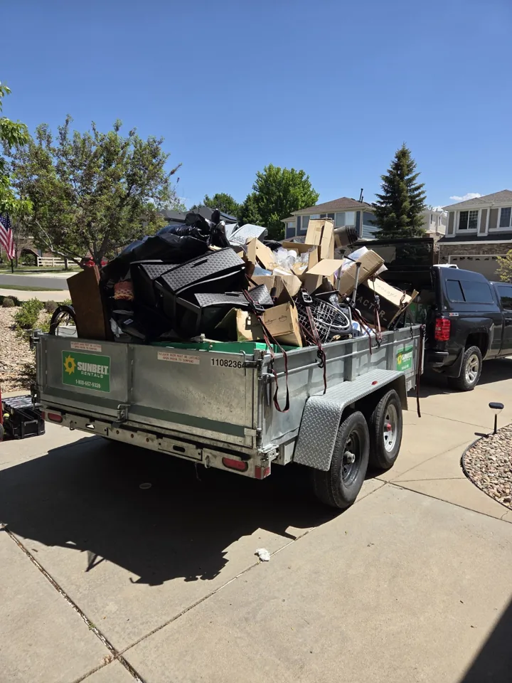

Junk removal in Lone Tree and South Denver
Clear out unwanted furniture, household clutter, packaging or yard debris. Wagner Home Services reviews the load, access and disposal needs before quoting a pickup.

Household furniture and small cleanouts
Send photos of the complete pile, including large pieces and anything stored in another room or outside. Let us know whether you need a single furniture item removed, leftover packaging picked up or a small cleanout. Scheduled trash pickup requests can also be reviewed.
Dirt and landscape material removal
Our project gallery includes excavated soil hauling and landscape material removal. Dirt, hardscape material, slash and other heavy debris are reviewed by load. Keep these items separate in your request from light household clutter so the hauling and disposal requirements are clear.
What affects the estimate?
The amount and weight of the material, stairs, walking distance, parking access and disposal needs all matter. Include measurements or a nearby object for scale in your photos. Tell us about any especially heavy items or restricted access before scheduling.
Before pickup day
Identify exactly what should be removed and keep items you are retaining separate. Share gate codes, parking directions and any building access requirements privately when arranging the appointment. Acceptance of unusual materials must be confirmed before pickup.
Serving Lone Tree and the South Denver metro
Request service in Lone Tree, Highlands Ranch, Centennial, Parker, Castle Rock or Littleton. For other locations, share your address or ZIP code so travel and availability can be reviewed.
Common questions
Can you remove old furniture after assembly?
Yes, furniture removal requests can be reviewed alongside an assembly job. Include photos and a list of the pieces to be removed.
Do you haul dirt or landscaping debris?
Yes. Dirt, hardscape material, slash and landscaping debris are reviewed by load, weight, access and disposal requirements.
Can you quote from photos?
Photos help us review the scope. Send clear views of the whole load and describe stairs, parking and any especially heavy items; the request is reviewed before confirmation.
More home services
Request a free estimate
Send your project details, location and photos. An estimate request is reviewed before an appointment is confirmed.